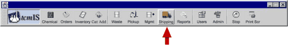
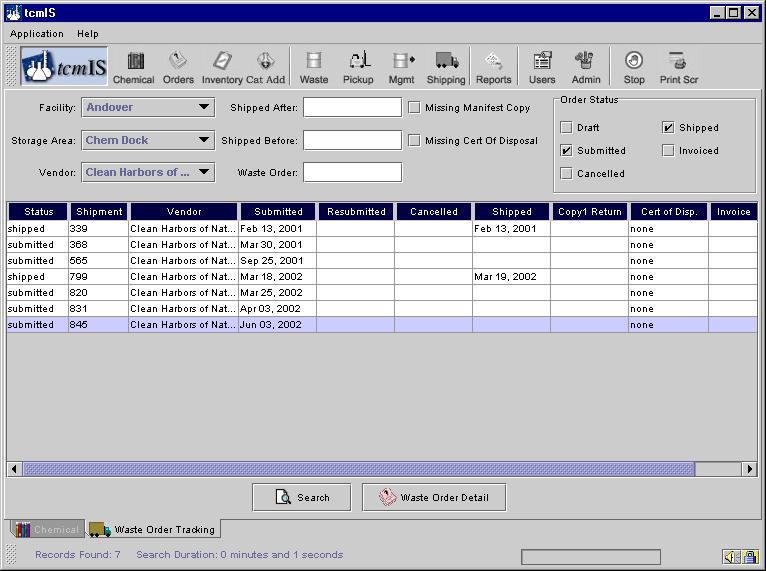

Waste Shipping
You can get to this screen by clicking on the button named as Shipping shown below.


This screen presents the waste Order Tracking screen. In this screen the waste manager can view the status of waste shipment orders.
The Status boxes in the upper right quadrant can be checked to view those waste orders with the checked status. Further detail on any order can be viewed by clicking once on the line of interest, then clicking the Waste Order Detail button. On clicking the Waste Order Detail button you will be automatically taken to the Waste Order Detail screen.